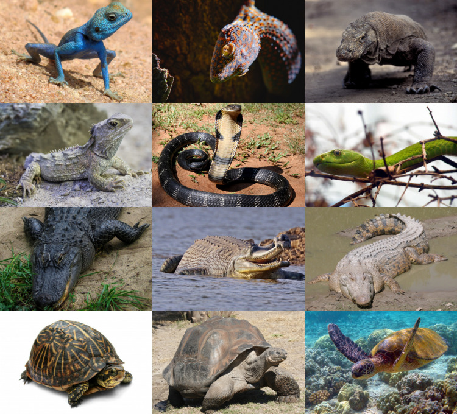

Пресмыка́ющиеся, или репти́лии (лат. Reptilia), — традиционно выделяемый класс преимущественно наземных позвоночных животных из клады амниот,
включающий современных черепах, крокодилов, клювоголовых и чешуйчатых. Пресмыкающиеся являются парафилетической группой,
так как дали начало птицам, но не включают их самих. В качестве монофилетической альтернативы класса выделяется клада завропсид,
или рептилий в пересмотренном составе,
в которую включают представителей традиционного класса пресмыкающихся (кроме зверообразных) и птиц